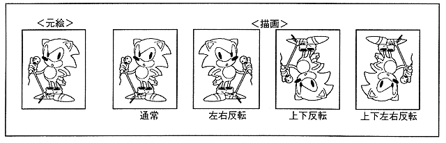

Sprite draws a character pattern. Character pattern is defined in VRAM as pixel data as character pattern table.
Standard Sprite
This is a normal rectangular sprite.
元 You can flip the original picture pattern vertically and horizontally. In any sprite mode, up / down / left / right inversion is possible (Figure 3.3).
Figure 3.3 Standard Sprite

Enlarged / reduced sprite
A sprite that can be enlarged and reduced, and can be zoomed only in the vertical and horizontal directions (Figure 3.4).